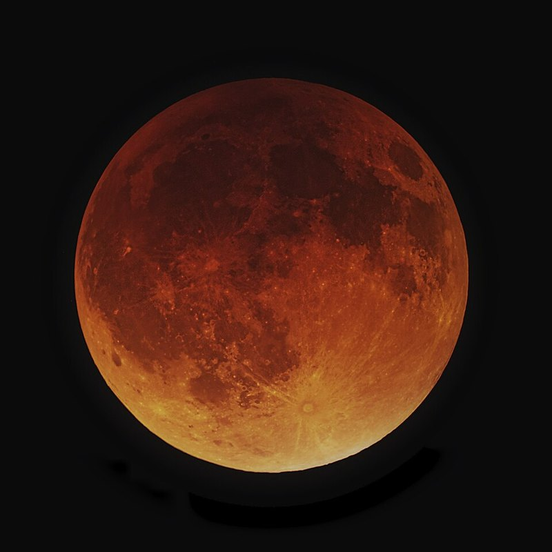

La pagina 2.3 si è chiusa con il Sole previsto entro pochi primi d’arco per duemila anni, e con la Luna ancora da affrontare, la cui velocità lungo l’eclittica cambia molto più di quella del Sole. La parte più grande di questa variazione si ripete ogni 27 giorni e mezzo.
Ipparco e Tolomeo la spiegarono con un piccolo cerchio portato attorno alla Terra, l’epiciclo, la cui grandezza trovarono da tre eclissi di Luna. Con esso possiamo collocare la Luna entro 40′ a ogni Luna nuova e piena, gli istanti che decidono le eclissi, anche se non ancora nel frattempo.
1 · OsservazioneLa velocità della Luna e il suo periodo
La Luna percorre in media 13,18° di eclittica al giorno, un giro intero in circa 27 giorni e un terzo. Nel corso del 2025 il suo moto giornaliero si scosta da quella media fino al 16%, quasi cinque volte quanto quello del Sole (pagina 2.1).
Nella figura
- tratteggio
- il moto giornaliero medio, 13,18°
Ogni istante di massima velocità arriva circa due giorni prima nel ciclo delle fasi rispetto al precedente. A gennaio la Luna è più veloce cinque giorni prima della Luna piena, alla fine di aprile circa a metà fra due Lune piene, e a novembre e dicembre alla Luna piena. La velocità ha quindi un periodo proprio, un po’ più corto del mese delle fasi.
Quel periodo è il mese anomalistico, 27,55 giorni, e il moto disuguale che si ripete con esso è ciò che Tolomeo chiama la prima anomalia della Luna. L’istante di massima velocità scorre attraverso l’intero ciclo delle fasi e torna alla Luna piena dopo 412 giorni in media (Esercizio 2). La Luna piena più veloce deve cadere su una Luna piena, quindi l’intervallo effettivo è di 13, 14 o 15 mesi. Dal 1º agosto 2023 al 17 ottobre 2024 fu di 15, e da allora al 4 dicembre 2025 di 14.
Cinque mesi
Ciascuno dei moti della Luna ha il suo mese, il tempo che impiega a tornare nello stesso posto. Il modello di questa pagina ne usa due, il mese tropico per il moto medio in longitudine eclittica e il mese anomalistico per il moto in anomalia. La tabella li dà tutti e cinque, perché differiscono di ore e si confondono facilmente. Vengono tutti dal cielo di riferimento dal 1926 al 2025. Il mese sinodico e quello anomalistico sono misurati con una retta per gli istanti delle Lune nuove e degli istanti di massima velocità della Luna; il mese tropico segue da quello sinodico e dal Sole medio (sezione 3), il sidereo gli aggiunge la precessione della pagina 2.3, e il draconitico viene dalla latitudine eclittica della Luna alle Lune nuove e piene (pagina 3.3).
| Mese | La Luna torna | Durata |
|---|---|---|
| tropico | alla stessa longitudine eclittica | 27,32158 g |
| sidereo | alla stessa stella | 27,32166 g |
| sinodico | alla stessa fase | 29,53059 g |
| anomalistico | alla stessa velocità | 27,55454 g |
| draconitico | allo stesso nodo, dove attraversa l’eclittica | 27,21222 g |
Solo 7 secondi, la precessione di un mese, separano il mese tropico da quello sidereo. Il mese sinodico è più lungo di entrambi di due giorni, perché il Sole va avanti mentre la Luna fa il giro, così come il giorno solare è più lungo del giorno sidereo. E la Luna torna all’eclittica 2,6 ore prima di tornare alla stessa stella, quindi il mese draconitico è il più corto di tutti.
Il mese anomalistico, invece, è più lungo di quello sidereo di 5,6 ore. Quindi il punto dell’eclittica in cui la Luna è più veloce non è fisso fra le stelle: si sposta verso est, e fa un giro in 8,85 anni. Qualunque modello della velocità deve riprodurre questo moto.
Tolomeo descrive come furono trovati i periodi: confrontando eclissi di Luna a secoli di distanza, e cercando un intervallo, lungo un numero intero di mesi, dopo il quale il moto della Luna si ripete (Almagest IV 2). Il più antico, il «Periodico», pone 223 mesi sinodici uguali a 239 mesi anomalistici. La relazione di Ipparco, 251 mesi sinodici per 269 mesi anomalistici, è migliore: con i mesi della tabella i due membri del Periodico differiscono di cinque ore, quelli di Ipparco di meno della precisione di un secolo di misure. Toomer afferma, dopo Kugler e Aaboe, che Ipparco prese queste relazioni dall’astronomia babilonese, e si limitò a confermarle confrontando eclissi del suo tempo con eclissi babilonesi di 345 anni prima (nota a IV 2).
2 · ModelloL’epiciclo
Deferente ed epiciclo
Tolomeo descrive il modello in IV 6. Un cerchio centrato sulla Terra, nel piano dell’eclittica, porta uniformemente verso est il centro di un piccolo cerchio, l’epiciclo, e la Luna si muove sull’epiciclo «in modo tale che sull’arco vicino all’apogeo il suo moto sia in avanti rispetto al cielo», cioè verso ovest, con la velocità del suo ritorno in anomalia. Trascura la piccola inclinazione dell’orbita della Luna, che cambia appena la sua longitudine eclittica.
Sia $R$ il raggio del cerchio portante, il deferente, e $r$ il raggio dell’epiciclo. Il centro K dell’epiciclo si muove alla longitudine eclittica media $\bar\lambda = L_0 + n\,d$, come il Sole medio della pagina 1.3. L’angolo della Luna sull’epiciclo, contato verso ovest dall’apogeo dell’epiciclo, il punto più lontano dalla Terra, è l’anomalia $M = M_0 + n_M\,d$, l’angolo da cui prende nome la prima anomalia. I due moti giornalieri $n$ e $n_M$ appartengono al mese tropico e al mese anomalistico, 13,18° e 13,06°.
È il moto verso ovest all’apogeo che rende la Luna lenta lì. Sul lato lontano dell’epiciclo il moto proprio della Luna va contro il moto di K verso est, mentre sul lato vicino, al perigeo, i due si sommano.
L’equazione dell’anomalia
Come nella pagina 2.1, scriviamo la posizione L della Luna, vista dalla Terra O, come somma di vettori, $\vec{OL} = \vec{OK} + \vec{KL}$, in un sistema ruotato nella direzione di K: il suo primo asse punta a $\bar\lambda$ e il secondo 90° più a est. Lì $\vec{OK} = (R, 0)$, e la Luna, all’angolo $M$ verso ovest dall’apogeo, sta in $r\,(\cos M, -\sin M)$ da K, quindi
$$\vec{OL} = \begin{pmatrix} R + r\cos M \\ -r\sin M \end{pmatrix}.$$La direzione di questo vettore dal primo asse è l’angolo da $\bar\lambda$ alla longitudine eclittica vera della Luna $\lambda$, l’equazione dell’anomalia $q$. Con $e = r/R$,
È l’equazione del centro della pagina 2.1, con il rapporto dei raggi al posto dell’eccentricità, quindi tutto ciò che si è trovato lì vale anche qui. Al primo ordine $q \approx -e\sin M$, e la massima equazione è $\arcsin e$. Per l’epiciclo si raggiunge dove la linea di vista dalla Terra è tangente all’epiciclo, in $\cos M = -e$.
L’epiciclo di Tolomeo ha raggio 5,25 dove quello del deferente è 60 ($e = 0{,}0875$), e la sua massima equazione è 5°01′, come nella sua tavola della prima anomalia (IV 10).
La velocità
Per vedere come varia la velocità del modello, deriviamo $\lambda = \bar\lambda + q$ rispetto al tempo, con $d\bar\lambda/dt = n$ e $dM/dt = n_M$. La derivata dell’arcotangente dà
$$\frac{d\lambda}{dt} = n + n_M\,\frac{dq}{dM}, \qquad \frac{dq}{dM} = -\frac{e\,(e + \cos M)}{1 + 2e\cos M + e^2}.$$La Luna è più lenta all’apogeo dell’epiciclo, dove $M = 0$ e la velocità è $n - n_M\,e/(1 + e)$, e più veloce al perigeo, $n + n_M\,e/(1 - e)$. Con il rapporto di Tolomeo sono 12,13° e 14,43° al giorno. La velocità si ripete con $M$, ogni mese anomalistico, come richiede la sezione 1. L’intervallo della Luna reale nella Figura 1 è ancora più ampio.
Il rapporto reale è abbastanza piccolo che, disegnato in scala, l’epiciclo si vede a fatica, quindi la Figura 2 parte con $r/R = 0{,}3$, tre volte e mezzo quello di Tolomeo.
(a) il deferente e l’epiciclo
(b) l’equazione dell’anomalia in due mesi
Nel pannello (a)
- tratteggio
- la longitudine eclittica media $\bar\lambda$, per K fino all’apogeo dell’epiciclo
- $M$
- contato verso ovest (in senso orario) dall’apogeo
L’epiciclo e l’eccentrico
La pagina 2.1 ha notato che la disuguaglianza del Sole si può produrre sia con un eccentrico sia con un epiciclo. I due modelli sono equivalenti, e una volta scritta la posizione della Luna come somma di vettori la dimostrazione è breve. Con $\hat u(\lambda)$ il versore alla longitudine eclittica $\lambda$, l’epiciclo mette la Luna in
$$\vec{OL} = R\,\hat u(\bar\lambda) + r\,\hat u(\bar\lambda - M).$$La somma di vettori è commutativa, quindi lo stesso punto è $r\,\hat u(\bar\lambda - M) + R\,\hat u(\bar\lambda)$. Letto così, la Luna si muove alla longitudine eclittica media su un cerchio di raggio $R$ il cui centro C sta alla distanza $r$ dalla Terra, verso $\bar\lambda - M$. Quel cerchio è un eccentrico con eccentricità $e = r/R$ e il suo apogeo in $\lambda_A = \bar\lambda - M$:
Le due costruzioni danno lo stesso punto in ogni istante, e quindi la stessa longitudine eclittica e la stessa distanza, purché l’apogeo dell’eccentrico si muova con la differenza dei due moti medi. La Terra O, il centro K, la Luna L e il centro C sono i vertici di un parallelogramma.
Quel parallelogramma è la dimostrazione di Tolomeo (IV 5). Egli conclude che «gli stessi fenomeni risulteranno in tutti i casi da entrambe le ipotesi», che i periodi dell’anomalia e della longitudine eclittica siano uguali, come per il Sole, o disuguali, come per la Luna, purché i rapporti siano gli stessi. Un eccentrico di altra grandezza, con lo stesso rapporto fra eccentricità e raggio, dà ancora le stesse direzioni; cambiano solo le distanze (Esercizio 1).
Per il Sole i due periodi sono uguali, $n = n_M$, e l’eccentrico della pagina 2.1 non ruota, a parte il moto lento della pagina 2.3. Per la Luna $n - n_M = 0{,}1114^\circ$ al giorno: l’apogeo dell’eccentrico si sposta verso est di 3,07° ogni mese anomalistico e fa un giro in 8,85 anni, il moto del punto di massima velocità trovato nella sezione 1.
Tolomeo scelse l’epiciclo per la prima anomalia perché voleva l’eccentrico per la seconda (IV 5).
Nella figura
- attorno a O
- il deferente
- attorno a C
- l’eccentrico
- punteggiato
- la linea degli apsidi dell’eccentrico, fino al suo apogeo A
3 · AdattamentoL’epiciclo da tre eclissi
Le osservazioni devono dare la grandezza dell’epiciclo, $e = r/R$, e dove si trovava la Luna in un istante, la sua longitudine eclittica media e la sua anomalia, che fissano $L_0$ e $M_0$. Per usare osservazioni fatte a mesi di distanza, il metodo richiede anche i due moti medi, che portano la Luna da un’osservazione alla successiva.
I moti medi
Il moto medio in longitudine eclittica viene dal ritorno della Luna al Sole. In un mese sinodico $P_s$ la Luna guadagna un giro intero sul Sole medio, quindi si sposta di 360° più del Sole medio nello stesso tempo, e il suo moto giornaliero è
$$n = n_\odot + \frac{360^\circ}{P_s},$$dove $n_\odot$ è il moto giornaliero del Sole medio della pagina 1.3.
Il moto in anomalia segue dalla relazione della sezione 1, 251 mesi sinodici per 269 mesi anomalistici:
$$n_M = \frac{269 \times 360^\circ}{251\,P_s}.$$Entrambe le velocità si fissano meglio con osservazioni distanti, perché l’errore di ciascuna viene allora diviso per l’intero intervallo. Prendiamo $P_s$ dalle 1237 Lune nuove dal 1926 al 2025, con una retta per i loro istanti: 29,530586 giorni, entro 2 secondi. Con il Sole medio della pagina 1.3 questo dà $n = 13{,}176397^\circ$ e $n_M = 13{,}064987^\circ$ al giorno. Il mese anomalistico di $n_M$ è più lungo di 1,5 s di quello misurato dagli istanti di massima velocità nella sezione 1, ben entro i 9 s che quegli istanti sparsi consentono.
Le eclissi di Luna come osservazioni
Per la grandezza dell’epiciclo e il posto della Luna, le eclissi di Luna sono le osservazioni da usare. A metà di un’eclissi di Luna la Luna è opposta al Sole, la cui longitudine eclittica è data dall’eccentrico della pagina 2.1, quindi la longitudine eclittica della Luna è nota senza misurarla rispetto alle stelle. La Luna è abbastanza vicina perché il luogo dell’osservatore sulla Terra la sposti rispetto alle stelle, ma quella parallasse non cambia l’istante di un’eclissi.
Le eclissi hanno un altro vantaggio. Il moto della Luna ha una seconda grande disuguaglianza, massima ai quarti, che alla Luna nuova e piena cambia solo la grandezza della prima, quindi un’eclissi misura una sola equazione, quella che modella l’epiciclo.

.jpg){kind=link}
Il metodo delle tre eclissi
Tre eclissi danno tre istanti, $t_1$, $t_2$ e $t_3$, le metà delle eclissi. Le incognite sono $e$ e la longitudine eclittica media e l’anomalia $M_2$ alla seconda eclissi. Fra le prime due eclissi la Luna media avanza di $n\,(t_2 - t_1)$, e la Luna percorre sul suo epiciclo l’arco di anomalia $a_{12}$; fra la seconda e la terza, $a_{23}$:
$$a_{12} = n_M\,(t_2 - t_1), \qquad a_{23} = n_M\,(t_3 - t_2),$$entrambi contati oltre i giri interi.
Il moto vero della Luna su ciascun intervallo viene dal Sole. A metà di ogni eclissi la Luna è opposta al Sole, quindi da un’eclissi alla successiva si sposta, oltre i giri interi, esattamente quanto il Sole. Il moto vero della Luna è quindi quello del Sole, e la Luna stessa non va mai misurata rispetto alle stelle.
Togliendo il moto medio sullo stesso intervallo resta il moto vero meno il moto medio, di nuovo oltre i giri interi:
$$d_{12} = \big[\lambda_\odot(t_2) - \lambda_\odot(t_1)\big] - n\,(t_2 - t_1), \qquad d_{23} = \big[\lambda_\odot(t_3) - \lambda_\odot(t_2)\big] - n\,(t_3 - t_2).$$Alle eclissi si misurano solo i tempi, e il Sole e i due moti medi danno tutto il resto. La tabella segue le tre eclissi di Luna attorno al 2026, il 7 settembre 2025, il 3 marzo 2026 e il 28 agosto 2026, attraverso questi passi, con il Sole di riferimento e gli istanti di opposizione del cielo di riferimento, entro pochi minuti dalla metà dell’eclissi.
| Eclissi del 2025–2026 | dalla prima alla seconda | dalla seconda alla terza |
|---|---|---|
| intervallo | 176 g 17,5 h | 177 g 16,7 h |
| il moto vero del Sole | $177{,}54^\circ$ | $171{,}99^\circ$ |
| il moto medio, $n\,\Delta t$ | $168{,}66^\circ$ | $181{,}37^\circ$ |
| l’arco di anomalia, $n_M\,\Delta t$ | $148{,}97^\circ$ | $161{,}57^\circ$ |
| vero meno medio, $d$ | $+8{,}88^\circ$ | $-9{,}38^\circ$ |
Poiché la longitudine eclittica media cresce esattamente di $n\,(t_2 - t_1)$, ciò che resta in $d_{12}$ è la variazione dell’equazione dell’anomalia fra le due eclissi, e lo stesso vale per $d_{23}$:
$$d_{12} = q(M_2) - q(M_2 - a_{12}), \qquad d_{23} = q(M_2 + a_{23}) - q(M_2).$$Al primo ordine, $q(M) = -e\sin M$. Definendo $X = e\cos M_2$ e $Y = e\sin M_2$, poiché $e\sin(M_2 + a) = X\sin a + Y\cos a$, le due equazioni diventano lineari in X e Y (con $d$ in radianti):
$$\begin{aligned} d_{12} &= -X\sin a_{12} - Y\,(1 - \cos a_{12}), \\ d_{23} &= -X\sin a_{23} + Y\,(1 - \cos a_{23}). \end{aligned}$$La loro soluzione dà $e = \sqrt{X^2 + Y^2}$ e $M_2 = \operatorname{atan2}(Y, X)$ al primo ordine.
(a) la Luna sull’epiciclo alle tre eclissi
(b) le due equazioni
Nel pannello (b)
- rosso
- l’equazione di $d_{12}$, continua dove vale esattamente, tratteggiata al primo ordine
- viola
- l’equazione di $d_{23}$, allo stesso modo
- punto grigio
- la soluzione al primo ordine
L’epiciclo dalle eclissi del 2025–2026
Risolte esattamente, come fanno le curve continue della Figura 4, le equazioni delle eclissi del 2025–2026 danno $e = 0{,}0844$, una massima equazione di 4,84°, e l’anomalia della Luna alla seconda eclissi. Tornando indietro dalla seconda eclissi a J2000.0 con le due velocità medie si ottengono $L_0$ e $M_0$, e la longitudine eclittica media che troviamo lì differisce da quella di Meeus di un terzo di primo d’arco.
Altre terne di eclissi consecutive dal 2014 al 2026 danno rapporti fra 0,075 e 0,093. Le disuguaglianze minori che il modello trascura spostano un poco ogni eclissi, e tre eclissi sono troppo poche per mediarle via.
StoriaL’epiciclo di Ipparco e di Tolomeo
Tolomeo insiste che la teoria della Luna sia costruita sulle eclissi di Luna, «le sole osservazioni che permettono di determinare con precisione la posizione della Luna» (IV 1). Per il mese sinodico attribuisce a Ipparco proprio il lungo intervallo di cui le velocità hanno bisogno, eclissi dei Caldei confrontate con quelle del suo tempo (IV 2), anche se Toomer nota che Ipparco prese il mese dall’astronomia babilonese e si limitò a confermarlo. Tolomeo costruì il moto medio della Luna da questo mese e dal proprio Sole (IV 3).
Tolomeo risolse esattamente il problema delle tre eclissi, con le corde, seguendo il metodo di Ipparco. I registri davano l’ora di ogni eclissi in ore della notte, ed egli convertì gli intervalli fra esse in giorni solari medi con l’equazione del tempo della pagina 2.2 (IV 6). Lo risolse con tre eclissi babilonesi e di nuovo con tre osservate da lui ad Alessandria, e i due epicicli risultarono «quasi esattamente gli stessi». Usò 5,25 dove il deferente è 60, vicino a ciò che dà un adattamento ai minimi quadrati alle Lune nuove e piene del 2025.
Copernico ripeté il metodo quattordici secoli dopo con tre eclissi osservate da lui stesso, e trovò quasi lo stesso epiciclo (De Revolutionibus IV 5). Tutti questi gruppi di eclissi, da quelle babilonesi a quelle del 2025–2026, concordano entro la dispersione che oggi mostra un singolo gruppo di tre, come mostrano i preset della Figura 4. L’Esercizio 3 rifà il calcolo babilonese di Tolomeo.
4 · VerificaL’epiciclo contro la Luna reale
Per vedere se un epiciclo adattato a tre Lune piene vale anche alle altre fasi e in altri anni, la Figura 5 dà la sua curva dell’errore, $\Delta\lambda = \lambda_\text{modello} - \lambda_\text{rif}$, accanto a quella della Luna uniforme, che ha lo stesso moto medio e nessun epiciclo.
Nel 2026 l’epiciclo sbaglia fino a circa 3°, contro quasi 8° della Luna uniforme, e ancora molto peggio di quanto facesse l’eccentrico per il Sole.
Alle 25 Lune nuove e piene dell’anno, però, l’epiciclo non è mai a più di 40′ dalla Luna reale.
StoriaL’epiciclo di Tolomeo contro le sue eclissi
La verifica di Tolomeo del suo epiciclo fu l’accordo fra i due che trovò da eclissi distanti circa otto secoli e mezzo (IV 6). Le tre eclissi che osservò lui stesso sono fra quelle a cui lo adattò, quindi la verifica onesta è altrove: alle altre Lune nuove e piene del suo tempo, la sua Luna è circa un grado indietro rispetto a quella reale.
Il suo Sole è indietro di circa altrettanto. Collocava la Luna opposta al proprio Sole a ogni eclissi, quindi la Luna eredita l’errore del Sole, e così la sua epoca, che fissò da una delle eclissi babilonesi con lo stesso Sole (IV 8).
Nel corso dei secoli la sua Luna deriva con il suo Sole, e un poco più in fretta: il moto medio della sua Luna in longitudine eclittica è lento di poco più di quello del suo Sole.
5 · ResiduoGiusto alla Luna nuova e piena, sbagliato ai quarti
Gli errori più grandi della Figura 5 cadono vicino ai quarti, quando la Luna è a 90° dal Sole, dove le eclissi non la vedono mai. Un epiciclo adattato alle eclissi non ha modo di sapere come si muove lì la Luna.
L’avvistamento di Ipparco stesso mostra la discrepanza. Egli misurò la distanza della Luna dal Sole vicino a un quarto, e Tolomeo calcola che la sola prima anomalia la pone 2,7° più lontana dal Sole. Da «numerose altre osservazioni simili» Tolomeo conclude che vicino ai quarti la massima equazione è di circa 7⅔° (V 3).
Nella serie della Luna di riferimento, l’ellisse da sola dà una massima equazione di circa 6,3°, e l’attrazione del Sole aggiunge l’evezione, un termine che dipende dall’elongazione della Luna dal Sole. Alla Luna nuova e piena si sottrae, lasciando circa i 5° che misurano le eclissi, e ai quarti aggiunge la stessa quantità, dando circa 7,6°, vicino ai 7⅔° di Tolomeo.
Ciò che resta alle Lune nuove e piene, fino a 40′, ha due parti di grandezza simile. Una è l’adattamento a sole tre eclissi: un epiciclo adattato ai minimi quadrati a tutte le 24 Lune nuove e piene del 2025 resta entro 24′ da esse. Quasi tutta l’altra è l’equazione annua, un termine di 11′ che segue l’anomalia del Sole, con qualche primo d’arco dovuto all’inclinazione dell’orbita della Luna.
Ciò che manca all’epiciclo è un termine che cresca con l’elongazione della Luna dal Sole, costruito nella geometria stessa. La pagina 3.2 dà quello di Tolomeo, e mostra che cosa fa alla distanza della Luna.
Esercizi
Dimostra il teorema della sezione 2 nella forma generale di Tolomeo: un eccentrico di raggio $R'$, il cui centro sta alla distanza $r'$ dalla Terra con $r'/R' = r/R$, il cui apogeo si muove con $n - n_M$, e sul quale la Luna è vista dal centro alla longitudine eclittica media $\bar\lambda$, mette la Luna nella stessa direzione dell’epiciclo in ogni istante, ma non alla stessa distanza. Poi applicalo a Ipparco: Tolomeo riferisce che egli trovò 6,25 dove il raggio è 60 con un eccentrico, e 4,77 con un epiciclo (IV 11). Possono entrambi descrivere la stessa Luna? Trova la massima equazione di ciascuno.
Scrivi la Luna dell’eccentrico come somma di due vettori, come fa la sezione 2 per l’epiciclo.
L’eccentrico mette la Luna in $r'\,\hat u(\bar\lambda - M) + R'\,\hat u(\bar\lambda)$. Poiché $r' = (R'/R)\,r$, questo è
$$\frac{R'}{R}\left[\,r\,\hat u(\bar\lambda - M) + R\,\hat u(\bar\lambda)\,\right] = \frac{R'}{R}\,\vec{OL},$$il vettore dell’epiciclo moltiplicato per il numero positivo $R'/R$: la stessa direzione in ogni istante, a una distanza pari a $R'/R$ volte quella dell’epiciclo.
Conta solo il rapporto, quindi due modelli con rapporti diversi descrivono due Lune diverse. La massima equazione di 6,25 su 60 è $\arcsin 0{,}10417 = 5^\circ 58' 45''$, e quella di 4,77 su 60 è $\arcsin 0{,}07944 = 4^\circ 33' 24''$, contro $5^\circ 01' 11''$ per i 5,25 di Tolomeo. Tolomeo scrive 5°49′ e 4°34′, dove Toomer nota che i valori corretti sono 5°59′ e 4°33′. Tolomeo attribuisce la discrepanza non alle due ipotesi ma al calcolo di Ipparco degli intervalli fra le sue eclissi (IV 11).
Le Lune piene più veloci si ripetono circa ogni quattordici mesi. Nel cielo di riferimento la prima del secolo fu l’8 febbraio 2001, e 17 intervalli dopo un’altra cadde l’8 aprile 2020, 6998,8 giorni dopo. Da questo e dal mese sinodico, 29,530586 giorni, trova il mese anomalistico. Quanti mesi sinodici e anomalistici contiene un intervallo?
In un intervallo, quanti giri in più ha fatto l’anomalia rispetto alle fasi?
Un intervallo dura $B = 6998{,}8 / 17 = 411{,}69$ giorni. In esso l’anomalia fa un giro in più delle fasi, $B/P_a = B/P_s + 1$, quindi
$$\frac{1}{P_a} = \frac{1}{P_s} + \frac{1}{B}, \qquad P_a = \frac{1}{1/29{,}530586 + 1/411{,}69} = 27{,}5541 \text{ giorni},$$35 secondi meno dei 27,5545 giorni misurati. Un intervallo contiene 13,94 mesi sinodici e 14,94 mesi anomalistici. La Luna piena più veloce può cadere solo su una Luna piena, quindi un singolo intervallo dura 384, 413 o 443 giorni; solo la media su molti intervalli dà il battimento. Il Periodico della sezione 1 dà $223 \times 29{,}530586 / 239 = 27{,}5536$ giorni.
Parti dagli intervalli fra le eclissi babilonesi di Tolomeo come registrati, 354 giorni 2½ ore e 176 giorni 20½ ore, e dai suoi moti giornalieri, $n = 13{,}1763822^\circ$ e $n_M = 13{,}0649829^\circ$. Trova il moto medio e l’arco di anomalia su ciascun intervallo, e confrontali con i suoi valori, 345°51′ e 170°07′ in longitudine eclittica, 306°25′ e 150°26′ in anomalia (IV 6). Poi, con i suoi valori, i moti veri del Sole, 349°15′ e 169°30′, danno $d_{12}$ e $d_{23}$ (IV 6). Risolvi le equazioni al primo ordine della sezione 3 per $X$ e $Y$, poi trova $e$ e $M_2$, e confronta con la soluzione esatta della Figura 4 («Babilonia, 721 a.C.») e con i 5,22 e i 12°24′ di Tolomeo. La longitudine eclittica vera della Luna alla seconda eclissi era Vergine 13°45′ (163,75°): dov’era la Luna media?
Moltiplica ogni intervallo, in giorni, per il moto giornaliero e togli i giri interi. Per le equazioni usa i valori di Tolomeo, $a_{12} = 306{,}4167^\circ$, $a_{23} = 150{,}4333^\circ$, con $d_{12}$ e $d_{23}$ in radianti.
Dagli intervalli registrati i moti medi sono 345°48,7′ e 170°17,9′, e gli archi di anomalia 306°21,9′ e 150°35,8′, entro 11′ dai 345°51′, 170°07′, 306°25′ e 150°26′ di Tolomeo: egli conta gli intervalli in giorni solari medi, e i suoi moti medi corrispondono a intervalli più lunghi di 4 minuti e più corti di 20 minuti. Con i suoi valori, $d_{12} = 349^\circ 15' - 345^\circ 51' = +3^\circ 24'$ e $d_{23} = 169^\circ 30' - 170^\circ 07' = -0^\circ 37'$.
In radianti $d_{12} = 0{,}05934$ e $d_{23} = -0{,}01076$, e le due equazioni sono
$$\begin{aligned} 0{,}8047\,X - 0{,}4063\,Y &= 0{,}05934, \\ -0{,}4934\,X + 1{,}8698\,Y &= -0{,}01076, \end{aligned}$$la cui soluzione è $X = 0{,}08173$, $Y = 0{,}01581$, quindi al primo ordine $e = 0{,}0832$ e $M_2 = 10{,}9^\circ$. Le equazioni esatte danno $e = 0{,}08694$, 5,216 parti dove il raggio è 60, e $M_2 = 12^\circ 24' 11''$: i 5,217 e i 12°24′ di Tolomeo. Il primo ordine è più corto del 4% in $e$: i termini di ordine $e^2$ che trascura non sono piccoli accanto a $d_{23}$, che è solo 0,62°.
L’equazione alla seconda eclissi è $q(M_2) = -0^\circ 59' 10''$, i $-0^\circ 59'$ di Tolomeo, quindi la Luna media era a $163{,}75^\circ + 0{,}986^\circ = 164{,}736^\circ$, Vergine 14°44′, come egli trova.
Fonti
- Tolomeo, Almagest (trad. ingl. G. J. Toomer, 1984): IV 1 (la teoria lunare dalle eclissi di Luna); IV 2 (i periodi della Luna, il Periodico, i 251 mesi e i 269 ritorni in anomalia di Ipparco, con la nota di Toomer sulla loro origine babilonese); IV 3 (i moti medi); IV 5 (l’equivalenza dell’eccentrico e dell’epiciclo); IV 6 (il modello dell’epiciclo, le eclissi babilonesi e alessandrine, 5,22 e 5,23); IV 7–8 (la correzione dell’anomalia, l’epoca); IV 9–10 (l’epiciclo di 5,25 e la tavola della prima anomalia); IV 11 (i due rapporti di Ipparco, con le correzioni di Toomer); V 2–3 (la seconda anomalia, l’avvistamento di Ipparco del 128 a.C., circa 7⅔° ai quarti, la nota di Toomer sulla tavola di 248 giorni).
- Copernico, De Revolutionibus (trad. ingl. E. Rosen), IV 4 (i periodi da Ipparco) e IV 5 [ff. 105v–109r] (il metodo delle tre eclissi, le sue eclissi del 1511, del 1522 e del 1523, 8604 parti su 100·000).
- R. Fitzpatrick, A Modern Almagest, § 6.1 (le anomalie lunari: l’ellisse, l’evezione, la variazione, l’equazione annua; il moto del perigeo in 8,85 anni).
- J. Meeus, Astronomical Algorithms (2ª ed., 1998), cap. 47 (la Luna di riferimento, la sua longitudine eclittica media, l’anomalia media e l’argomento della latitudine, i termini dell’evezione).
- Ogni numero di questa pagina:
tools/numbers/3.1-first-anomaly.js.